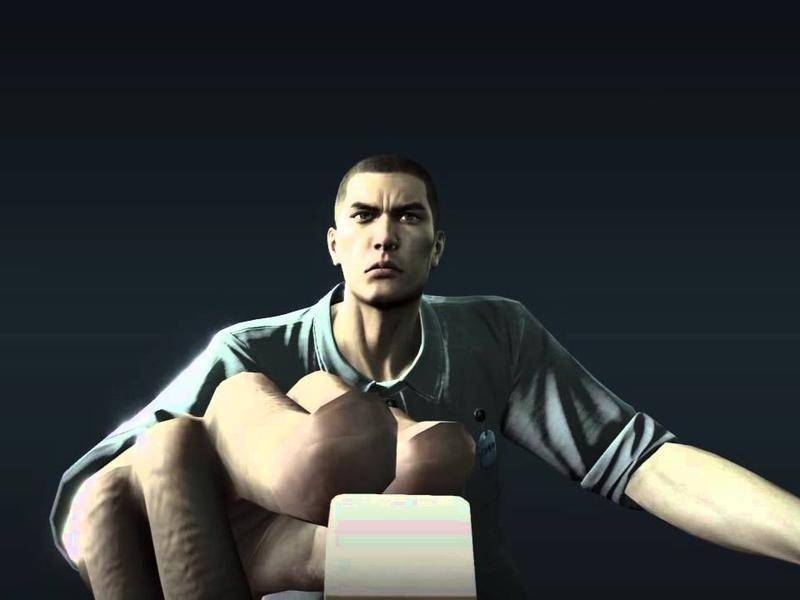
本文转自触乐网，作者美味铁板章鱼，《蜚声海外的国粹：麻将游戏简史》
当下中国游戏玩家已有5亿多，游戏产业规模1600亿多，但要去问一个普通的外国玩家，他可知道有什么中国产的电子游戏，却未必能答得上来。
但不知不觉中，一款华夏先贤们留下的游戏，作为国粹和人文瑰宝已悄然流传海外，不仅在犹太人中风行一时，曾成为美国华尔街金融工商精英们私人聚会的话题，也被新加坡总理作为展示亲民立场的巧妙手段。而在其起源地中国，它更是一种生活方式，被一代代人传承。
这游戏，嗯……就是麻将。
虽然看到这儿，可能有人会忍不住掀桌：麻将算什么游戏啊！可麻将与电子游戏的区别，仅在于更加传统，出现年代更为悠久罢了。假如一个电子游戏玩家出生在百年前，他可能就是个麻将玩家——像毛泽东和蒋介石，便都是真正的麻将高手。
毛主席说过，中国对世界有三大贡献，中医、《红楼梦》和麻将。他会一边打牌一边思考国家大事，从麻将的排列组合里找辩证法，还用麻将术语做过统战工作。而蒋介石早在上海滩，就已经把麻将练得炉火纯青，在新军阀混战、与冯玉祥和阎锡山相抗时，还通过牌局成功拉拢了军阀孙殿英。
不过也正如毛主席所说，麻将的流行范围，还真不仅限于华人圈。透过下面这些以“麻将”为主题的电子游戏，或许会让你有更深的认识。
“麻雀”在日本
追本溯源，麻将的鼻祖通常被认为是明代的“叶子”，也有“昆山牌”、“蜡牌”等别称，此时已出现万、索、钱三门，即当代麻将中的万、条、筒。到了清代，“叶子”进化发展为所谓的“三十色纸牌”，不但玩法众多，有各式旁类别枝，更重要是出现了 “天、地、人、和”，即当代麻将的“东、南、西、北”。
现代麻将在清朝末年已经出现，但这一时期麻将牌并无统一标准，字牌与花牌形制种类繁多，仅美国自然历史博物馆，就拥有十余种1875年左右的麻将藏品。直到1894年甲午战争时期，麻将才出现了具体的文字记载，此时被称为 “麻雀”。
彼时，日本人通过明治维新改造社会、变革国家，刚有点成绩就走上战争的不归路，要和全世界对赌自家的百年国运。与此同时，麻将也东渡日本。因此，麻将在日本至今仍被称之为“麻雀”，假名则为“マージャン”。
在一战结束后，麻将已经完善并且有了体系标准。日式麻雀只是游戏规则上的变化，而非麻将形制上的变化。在中国的演变也同样是规则上的，大多数集中在对字牌（东南西北风和中发白）、花牌（春夏秋冬梅兰竹菊）、百搭牌（财神、猫、老鼠、聚宝盆）的取舍弃留。
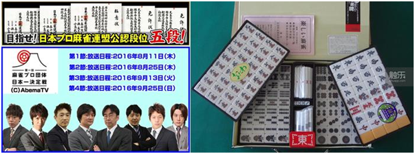
在日本，麻将不仅有段位，还有所谓的“日本一决定战”
二战后，日本人的对外扩张最终失败，麻将反而在岛国攻城略地、节节胜利。电子游戏诞生后，麻将等棋牌游戏，作为已成熟的游戏形式，且拥有广泛的受众基础，只需要稍微转化下形式，也就能顺理成章地进入市场，无论是在街机、家用机、PC、掌机，或者手机和平板电脑之类的移动平台，都是如此。
1978年《太空入侵者》登陆街机平台，并且取得不俗战绩，宣告日本人开始大规模进军游戏产业。作为早期游戏产业的霸权国家，以及日本人对麻将的狂热，顺理成章地造就了大批麻将游戏，这又反过来让更多人接触麻将，培养了更多的麻将爱好者。
《PT麻雀》通常被视为“世界首款‘麻将题材’的游戏”，但严格说来这款游戏并非“麻将游戏”，而是采用了麻将门类字牌的打砖块游戏，是对《快打砖块（ARKANOID）》类游戏的仿效。玩家需要使用下方的弹射板，折返弹球，从上方的牌库中，获取最恰当的十四张麻将牌，以完成某种组合来获取积分。这种看起来很“麻将”、却和麻将没多大关系的游戏，在市场上并没溅起什么水花。
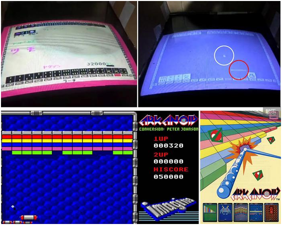
左上为游戏截图，右上用了反色对比，白圈为弹球，红圈为弹射板
在1981年5月时，“世界首款‘麻将’游戏”《ジャンピューター》在日本被送上街机，开发公司为阿尔法电子，也就是后来的ADK株式会社。当时的街机市场主要面向年轻人，游戏内容大多需要头脑反应和手眼配合，而这款麻将游戏的出现，使得街机也开始进入咖啡厅之类对消费力有要求的场所，让不少年长人士体会到游戏的乐趣，自然大获成功。
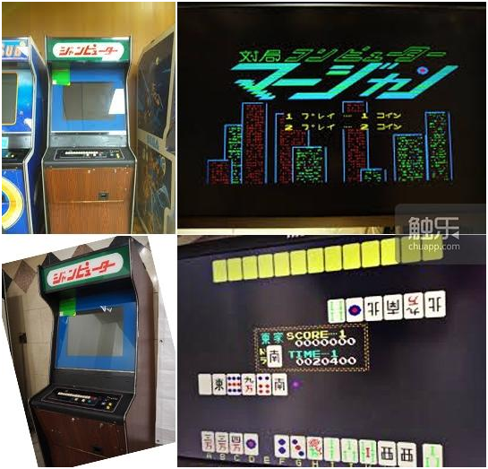
而今都算是藏品了
游戏用的是日本的麻将规则，包括计分方式在内和国内都有诸多不同，像是独具特色的立直(RICHI)和宝牌(DORA)，而打出去的牌，也必须要依照顺序排列在各玩家面前。除此之外，游戏没有太多可说的，人机对抗而已。游戏内设时间限制，时间到或起始的30000点数耗尽，则游戏结束。
游戏获得成功后，市面上很快便涌现出一大堆麻将街机，产品的同质化让竞争加剧，商业鏖战焦灼不堪，部分厂商另辟蹊径，开始推出成人向的麻将街机游戏。
1984年8月的《雀豪ナイト》，被认为是“世界首款脱衣麻将游戏”，玩家需要同身着空姐制服、 网球运动装、大学生打扮、 护士制服、高尔夫运动服、和服的像素点阵美女们对战，每次胜利均可去掉一层贴图，获胜五次即可看到……更“纯粹”的像素点阵图。
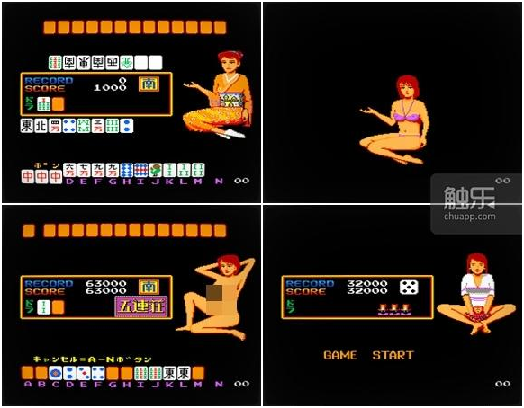
右下的妹子抱着的是章鱼，嗯……
其实，这类脱衣麻将的街机游戏并不多，总共不到八十款，麻将游戏本来市场规模有限，脱衣麻将市场规模就更小——就算是开放的日本，这类擦边球也会有各种舆论压力。随着街机市场萎缩，脱衣麻将也随着街机逐渐走向没落，部分转向PC平台，随着网络时代到来，脱衣麻将也几乎销声匿迹。
除了使用麻将题材、但却和麻将本身没有太多关系的伪麻将游戏如《PT麻雀》，尽量贴合现实中麻将规则、提供相似游戏体验的麻将游戏如《ジャンピューター》，以及针对成人市场、以美女脱衣作为噱头卖点的麻将游戏如《雀豪ナイト》，麻将在日本游戏中也作为附属小游戏出现，比如在《如龙》系列游戏中。
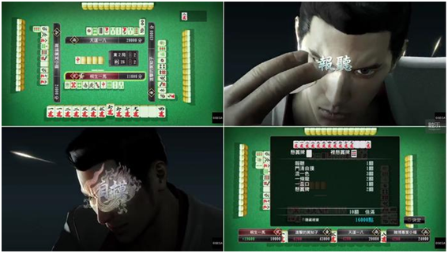
在《如龙》里，打个麻将都会有特写镜头搞气氛
不光是游戏，麻将在日本动漫、小说、影视中也时常出现，但多为环境体现、背景衬托或剧情需要，像《斗牌传说》《天才麻将少女》这类真正的麻将为核心的作品并不多。当然，也有《渣和无用改革》这样集少年漫画、麻将牌局、世界政治和时代讽刺于一身的作品出现——这部2006年开始连载的漫画，内容大致就是时任日本首相的小泉纯一郎，通过一手顺溜的麻将功力，同日本及世界各国的元首主脑们进行麻将对局，并赢得胜利和荣耀的荒诞故事。
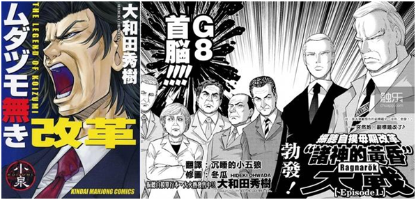
脑洞奇大的《渣和无用改革》
“Mahjong”在美国
在美国，最初的麻将是鸦片战争清政府开放五口通商后，美国驻清官员带回来的，都是早期不完善版本，前面也提到了，这些被博物馆收藏的早期麻将，已成为重要研究对象。
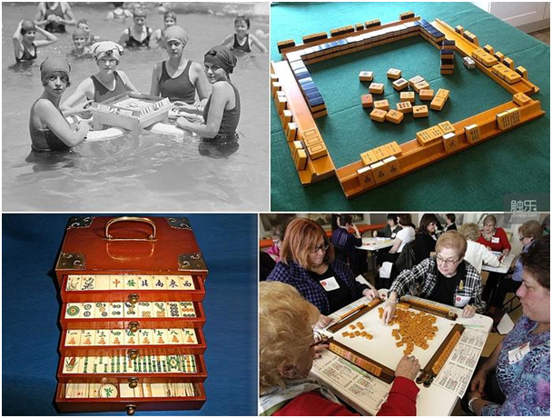
左下即为1920年代引入美国的麻将，现今价格不菲
而甲午战争后成熟版本的麻将，由标准石油公司在上海的代表约瑟夫·帕克·巴布考克（Joseph Park Babcock），于一战后的1923年引入美国——这哥们显然是麻将迷。不过当时麻将规则过于复杂，推广并不顺利，于是他还特意调整编订了简单的规则，以增加受众人群，这也就是所谓的美国标准。1937年，美国国家麻将联盟成立，作为最有影响力的麻将组织，从最初的32名注册会员发展到了数十万人。
美国各地都有麻将协会，每年还会举办大量循环赛和锦标赛。当下美国麻将大致有三种主流玩法，其一是传统的美国标准规则，其二是直接取用东亚地区的各种新兴规则，其三是混合以上两种规则派生出来的玩法。部分美国麻将牌手对待麻将的态度，远比东亚地区更严肃，他们将其视为高端智力游戏。
美国人的麻将电子游戏也很多，在此仅列举其中极具特色的一款，即1986年发售的《上海（Shanghai）》。该游戏登陆了包括麦金塔、苹果II和DOS，后来也移植到FC和Game Boy。这是个消除类游戏，有相对简单的界面，除了堆起来的不同麻将牌，就是点选用的手指状游标。
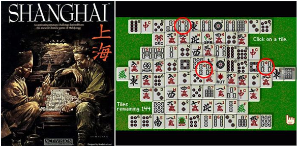
麻将堆成金字塔状
游戏目的是清除掉全部麻将牌，玩法也很简单，先点选一块麻将牌，再点选另外一块相同的，即可完成消除。游戏的难度在于安排恰当的消除次序，因为整副麻将牌被垒砌为五层的金字塔形状，随意清除掉边缘，很可能导致没有相应搭配而无法消除中间部分。比如上图，就得优先处理压在最上层的“四条”，才能解锁下一层的四张牌。
这款游戏销售情况不错，到发售续作发售时，各机型累计总销量几十万，在当年而言是相当不错了。1990年DOS版本的《上海2：巨龙之眼（Shanghai II: Dragon's Eye）》率先发售，随后也进行了各机型的移植，比如世嘉的MD，和当时已经在北美上市的SFC。
猜猜负责SFC移植的工作的是谁？
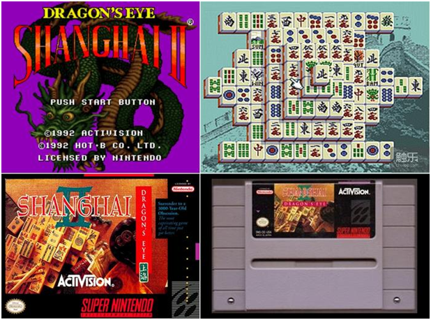——Blizzard，是的，暴雪！
那会儿暴雪还没改名字，叫做“Silicon & Synapse”（硅与神经键）。除了这款麻将游戏，更早的时候他们还代理过名为《Battle Chess II: Chinese Chess》的中国象棋游戏。草创初期，暴雪做了不少游戏移植和外包，还在主机平台发售过原创游戏如《摇滚赛车》和《失落的维京人》，直到《沙丘2》问世，才转向即时战略并获得成功。
总之，《上海》系列作为消除类的益智休闲游戏颇受好评，在2009年11月还发售过重制版。而这个重制版也成功引起了另一家公司的注意。
这家公司就是微软。
作为IT业的代表、行业创造力的化身，制霸市场几十年的微软，也推出过名为《微软麻将》的“原创”游戏，不过和《上海》系列对比一番后，似乎……
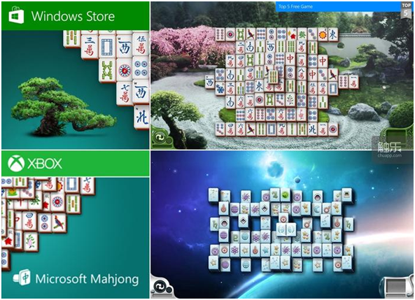
2012年10月推出的《微软麻将》
除了麻将牌，《微软麻将》还添加了其它主题，比如在深海主题中，牌面就变成了各种鱼类，太空主题则换成了各种天体。这款游戏还有众多的衍生版或仿效版，包括网页小游戏、掌机、移动平台等等。而此时的《上海》系列已经转向移动平台了。
“麻将”在中国
因为被视作“资本主义腐败的象征”，麻将在国内封禁多年。直到改革开放后，公安部作出了《关于公安机关不再干预麻将、纸牌的制造、销售问题的通知》，才让麻将再度成为中国人的休闲娱乐活动。从1985年到2000年，国内的麻将游戏无论街机、掌机、家用机、PC平台，大多为传入品，比如《天开眼》《电子基盘》《黄金牌》《龙虎榜》等日本麻将街机。随着台湾地区出品的麻将街机，如《万里长城》《超级大满贯》《中国麻将》等的出现，中文版和中文语音的优势，让它们接替日本麻将街机，迅速占据了大陆市场。
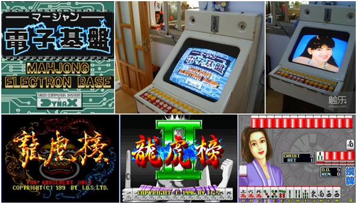
九十年代年前期占据市场的日本麻将街机，中期逐渐被台湾地区的同类街机取代
但很快，整个街机市场就遭到重创，原因是赌博机。
上世纪九十年代中期，街机厅开始同时出现普通街机、麻将街机和赌博机。甚至出现专门用水果机、老虎机、扑克机等赌博机营业的店铺。因为传统媒体的发声，一场清理整顿赌博机的行动开始了。虽说麻将街机本身没有赌博性，但社会对麻将的固有观念，令其看起来非常可疑，于是，悲催的麻将机在这次整顿中，也跟着躺枪了……直到1998年7月，国家体育总局审定了中国麻将竞赛规则，让麻将成为正式的竞技运动，几年后麻将街机也被正名，可惜已时过境迁。
九十年代中后期，PC版本的单机麻将有过短暂发展。2000年左右，随着个人电脑的普及，国家政策下网络迅猛铺开，社会氛围的变化，数字鸿沟被迅速填平，在互联网环境下，中国的电子游戏迎来一波真正的发展，而麻将游戏也首当其冲。
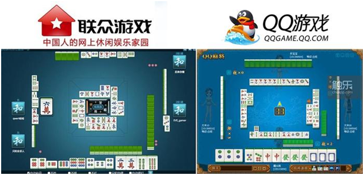
网络麻将，新千年前期用户主要在联众，后期逐渐转向企鹅
虽说现在的联众已变得乏人问津，但它却是互联网早期在线棋牌类网络游戏的开创者，2004年联众曾占据国内棋牌类网络游戏85%的份额——直到腾讯的QQ游戏面世，从2003年开始依托用户体量，不断蚕食联众份额。在这个过程中，麻将同其他棋牌类游戏一起，成为被争夺的焦点项目。
麻将牌局在中国，除了娱乐还有非常重要的意义，那就是亲戚、朋友、同事等人际间的社交往来。也因此，通过网络与陌生人打麻将，对大多数人而言，都是意义甚微的休闲放松。不过现实中的麻将也还是迎来了升级换代，那就是自动麻将机。
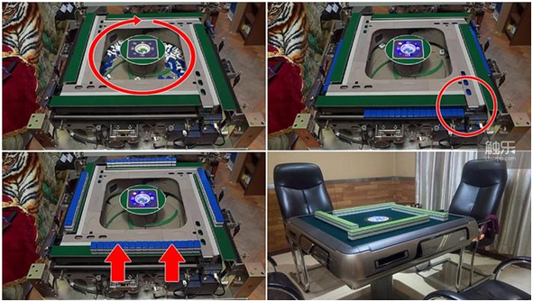
搅拌-堆牌-上升，两副牌轮流重复
这种自动化设备起源于日本，发明时间大约是1976年，经过近二十余年的发展，整个系统已趋于完善。九十年代中后期通过港澳台进入中国大陆市场。几年后，该设备的相关技术就被山寨厂商吃透，在竞争者彼此赶超的基础上，推出了各种价廉物美的自动麻将机，甚至开始返销日本。
在中国游戏产业崛起的过程中，麻将也成了学习游戏制作者们的跳板，用来练习和打磨自己尚不成熟的技巧，这类麻将游戏数量也算相当可观。随后，手机和平板电脑的移动平台快速兴起，麻将游戏进入新天地，同其他传统的棋牌类游戏一起占据了相当份额，甚至作为预装游戏存在。
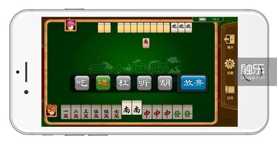
经常看到长者用手机打麻将自得其乐
在中国当下的环境中，各地均有自己地方特色的麻将规则，但从性质上来说，总体可分为四种：其一，家长里短性质，使用传统麻将或自动化麻将机的人际牌局；其二，移动平台或通过电脑，日常可以随玩随弃，打法碎片时间为主的休闲牌局；其三，在线下或通过互联网，进行正式比赛，争夺奖金和排名的牌局；其四是使用麻将，来进行金钱赌博的牌局。而中国的麻将游戏，不过是这张壮观拼图中的一小部分而已。
总之和所以
明朝中兴、满清入关、鸦片战争、满清倒台、军阀混战、第一次世界大战、第二次世界大战、新中国成立、改革开放、电子游戏诞生、电脑普及、网络时代、移动时代……麻将以万变应万变的姿态，顺应着时代变迁。无论是实体麻将，或电子游戏中的麻将，都已从起源地中国出发，经东亚向周边散播开来，随着世界化程度加深，最近还踏上了非洲大陆——或许下次发射行星探测器，麻将或预装了麻将游戏的智能手机，就可以承载着人类与宇宙星系沟通的使命被发射上天。
想想人类未来在太空站、月球和火星，乃至各个异星殖民地搓麻将的场面，那可真是壮观啊……纹桃科技致力于棋牌游戏开发13年，拥有大量棋牌游戏开发运营经验和大批成功案例。
想开发一款迅速盈利的棋牌游戏，欢迎咨询热线电话：18711739336
了解更多棋牌游戏行业信息：在线咨询>>


游戏产品
PRODUCTS

售后服务
SERVICE

技术支持
TECHNOLOGY

运营指导
OPERATING